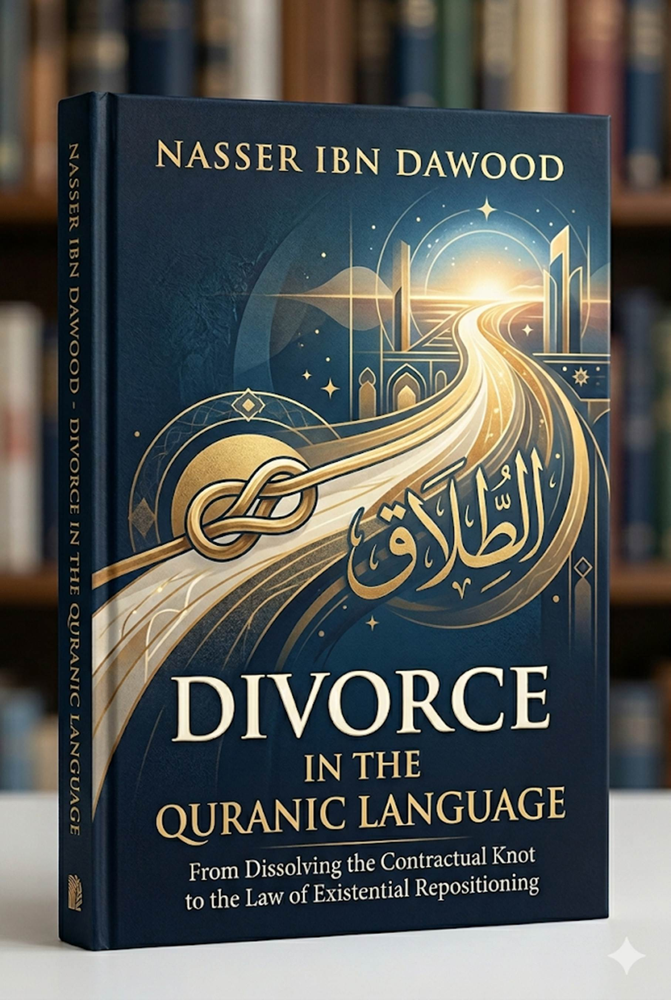

*A Condensed Conceptual Edition for the International Reader*
---
Knowledge is a universal right. The author firmly believes that wisdom should not be locked behind paywalls or language barriers.
- **Global Access Policy:** All books in this library are available for free in multiple digital formats (PDF, HTML, DOCX, TXT).
- **The Digital Library:** As of early 2026, the collection hosts 68 volumes (34 in Arabic and 34 in English), fully optimized for AI-assisted research and digital archiving.
- **Official Platforms:**
- Main Website: nasserhabitat.github.io/nasser-books/
- GitHub: nasserhabitat/nasser-books
---
This English edition is a condensed conceptual adaptation. It is not a word‑for‑word translation, but rather an “extraction of essence.” It presents the core philosophical framework in accessible English, omitting the exhaustive linguistic debates and classical references found in the original Arabic text.
For the academic researcher: The original Arabic version remains the primary source for comprehensive linguistic analysis, detailed exegesis (Tafsir), and the complete bibliography.
---
In contemporary religious consciousness, the concept of *divorce* (ṭalāq) has been severely reduced to two narrow levels:
- A procedural legal act – simply “ending the marriage.”
- An emotional, moral stigma – “failure, breakdown, shame.”
Both understandings miss the profound Quranic structure of the concept. The juristic tradition – though necessary for regulation – treated divorce as a chapter of rulings without analyzing its linguistic architecture within the Quran. Meanwhile, modern moralistic discourse loaded divorce with such intense psychological weight that it became “absolute evil,” rather than part of a divine balance for managing relationships and transitions.
**The central question of this study is:**
*How did the Quran rebuild the concept of divorce as a legislative and existential protocol for repositioning, rather than merely a separatist event?*
---
> **Divorce in the Quranic tongue is not a mere procedure to end a relationship. It is a legislative‑existential structure that organizes the transition from a dysfunctional bond to a new position, within a balance that preserves rights and prevents harm.**
In the Quranic system:
- Divorce is not **destruction** but **organized deconstruction**.
- It is not **chaos** but **engineered transition**.
- It is not an **end** but a **stage of review and reformation**.
---
It is a structural‑analytical method that aims to discover the semantic laws by which the Quran governs its concepts. It connects:
- The linguistic root
- The textual structure
- The conceptual network
- The operational function of meaning
In other words, meaning in the Quran is not extracted from an isolated word; it is built from the interaction of the root with its context, from the integration of the concept into a network, and from its transformation into an actionable function.
| Level | Domain | Function |
|-------|--------|----------|
| **Root level** | Linguistic meaning | Determine the semantic nucleus |
| **Contextual level** | Quranic usage | Pin down the precise meaning |
| **Network level** | Conceptual relations | Build the systemic coherence |
| **Functional level** | Effect & activation | Transfer meaning into reality |
To prevent confusion, the method distinguishes three levels:
1. **The decisive level** – binding rulings and historical facts.
2. **The structural level** – relations and patterns within the text.
3. **The symbolic level** – functional extension beyond the direct context.
*Rule:* The symbolic level cannot cancel or override the decisive level; it operates as a functional extension under it.
---
The root T-L-Q (ṭā lām qāf) in Arabic revolves around two integrated axes:
1. **Unfastening a restraint**
2. **Expansion after contraction**
Examples:
- *Aṭlaqa al‑asīr* – freed the prisoner.
- *Ṭalaqat an‑nāqah* – the she‑camel was released to graze without a hobble.
- *Imraʼah ṭāliq* – a woman who has exited the bond of marriage.
- *Wajh ṭalq* – a cheerful, un‑contracted face.
- *Lisān ṭalq* – an eloquent, unimpeded tongue.
The root does **not** denote mere “cutting off.” It denotes **liberation and flowing after confinement**.
Within the Quranic system, each letter carries a functional charge:
| Letter | Function | Indication |
|--------|----------|-------------|
| **Ṭ (ط)** | Enclosure, surrounding, pressurized extension | “Domain” or “surrounding state” (e.g., ṭāfa = circled, ṭabaʻa = sealed) |
| **L (ل)** | Direction, attachment, specification | “Connection” or “orientation” (e.g., li = for, lah = belongs to) |
| **Q (ق)** | Limit, separation, determination | “Decisiveness” or “re‑definition” (e.g., qaṭaʻa = cut, qadara = determined) |
Thus:
**Ṭ + L + Q = Transforming an attachment that exists within a surrounding domain into a determined state of separation.**
That is the precise linguistic definition of divorce in the Quranic tongue.
| Concept | Function |
|---------|----------|
| **Nikāḥ (marriage)** | Interlocking bond, structural joining |
| **Imsāk (retention)** | Conscious preservation within the system |
| **Ṭalāq (divorce)** | Unfastening the knot |
| **Tasrīḥ (release)** | Final, gracious discharge |
| **Firāq (separation)** | Complete, stable parting of ways |
| **Khulʻ (divestment)** | Unfastening initiated by the wife |
The Quran does not use synonyms; it uses precise functional terms.
---
A diagram of the system:
```
Marriage (Nikāḥ) → Dysfunction → Divorce (Ṭalāq) → Waiting Period (ʻIddah)
→ Either Retention with Maʻrūf (Imsāk) OR Release with Iḥsān (Tasrīḥ) → Final Separation (Firāq)
```
Key observations:
1. **Divorce is never presented in isolation** – it is always connected to the waiting period, retention, release, maʻrūf, iḥsān, and the prohibition of harm.
2. **The waiting period (ʻIddah)** is not a passive wait. It is a **review laboratory** with functions:
- Preventing haste
- Opening the door for reconciliation (rajʻah)
- Confirming pregnancy
- Cooling down emotions
- Re‑evaluating the decision
3. **The two‑time structure** – *“Divorce is twice”* (Qur’an 2:229) – means there are **two reversible opportunities** for reconciliation. After that, either retention with maʻrūf or release with iḥsān. The “third” divorce (major irrevocability) closes the door to direct return.
| Value | Function in Divorce |
|-------|---------------------|
| **ʻAdl (Justice)** | Preserves rights, prevents oppression |
| **Maʻrūf (the known good)** | Ensures a minimum of socially recognized fairness and stability |
| **Iḥsān (excellence/graciousness)** | Lifts the relationship – even at its end – to the level of dignity |
The Quranic system forbids:
- Retention for the purpose of harm (*ḍirār*)
- Release with revenge or humiliation
The ʻiddah is not a punishment. It is a protected time during which the divorced woman stays in the marital home (*lā tukhrijūhunna min buyūtihinna* – do not expel them from their houses). This stability allows for:
- **Three readings (qurūʼ)** – not merely biological cycles, but three levels of assessment:
1. Reading of the self (personal mistakes)
2. Reading of the other (partner’s needs and structure)
3. Reading of the future (capacity for tranquility or for gracious release)
Only after completing this laboratory does the system produce either **retention with maʻrūf** (re‑integration with updated code) or **release with iḥsān** (smooth exit without harmful residues).
---
The Quran does not treat divorce as an isolated family ruling. It reveals a **general law**: any dysfunctional bond that has lost its purpose and turned into harm must undergo a regulated process of unfastening and repositioning.
This law applies across multiple domains:
| Domain | Application |
|--------|-------------|
| **Family** | Ending a harmful marriage |
| **Corporate/Business** | Restructuring a failed partnership or dissolving a joint venture |
| **Cognitive** | Breaking free from a dysfunctional intellectual model or outdated paradigm |
| **Political** | Withdrawing from a harmful alliance or colonial relation |
| Stage | Function |
|-------|----------|
| **First two divorces** | Reversible unfastening – opportunities for reconciliation and review |
| **Major irrevocability (third)** | Final shutdown after two failed reform attempts. Direct return is blocked. |
| **Condition “until she marries another husband”** | Not a humiliating trick. It is an **existential barrier** forcing genuine repositioning. The divorced party must enter a complete new bond (a real marriage/partnership), experience it fully, then (if that also ends) may consider returning to the first – provided they believe they can uphold God’s limits. |
Common misunderstandings: critics say the Quran forces a woman to sleep with another man as a “trick” to return to her first husband.
The Quranic truth:
- The second marriage must be a **genuine, real marriage** (contract + consummation) entered with sincere intention, not a fake “analyst” marriage.
- The Prophet ﷺ cursed the “analyst” and the one for whom he analyzes.
- The purpose is to **protect the woman from being toyed with** (husband divorces and takes her back endlessly) and to **ensure that any return after the third divorce is based on real growth** gained through a different life experience.
In the author’s structural reading: if a bond has failed three times, the system requires a **full new bond** (with a third party) before any possible return. This is a **systemic safeguard** against frivolous manipulation.
---
The Quran’s numbers often describe **quality and process**, not just cold quantity.
| Phrase | Traditional Reading | Structural Reading |
|--------|---------------------|---------------------|
| “Divorce is twice” | Literal count (two repudiations then a third) | Describes the **method** to be followed each time divorce is initiated. “Twice” indicates a pattern of careful repetition. |
| “Three qurūʼ” | Three menstrual cycles or pure periods | **Three indicators/signs** to confirm that the womb is empty (including physical signs, a single menstrual bleed, or a doctor’s examination). Focus is on **certainty of condition**, not a fixed calendar. |
| “Four months and ten” | Four months and ten days | Four known months + an **open‑ended increase** (ʻashr without “days”) – the period lasts until the signs of non‑pregnancy are verified. |
- **Ajal** is the original principle: a period that ends with the verification of certain signs (e.g., delivery for a pregnant woman, three signs for a non‑pregnant woman). It **cannot be reduced to a fixed number**.
- **ʻIddah** is an **exceptional** measure (three months) prescribed **only** when doubt (*irtāb*) prevents the normal verification (e.g., a woman who has ceased menstruation).
Thus, the default in Quranic waiting periods is **qualitative verification**, not rigid calendar counting.
---
The author identifies “interpretive viruses” that corrupted the understanding of divorce:
1. **Biological reduction virus** – reducing nikāḥ to mere intercourse, and ʻiddah to only physiological waiting.
2. **The “analyst” (muḥallil) virus** – turning the condition “until she marries another husband” into a legal trick that degrades the dignity of both men and women.
3. **The mechanical counting virus** – focusing on the number of pronouncements rather than the functional purpose of each stage.
- Divorce became a weapon of emotional revenge, not a considered decision.
- The waiting period became empty time, wasting the opportunity for review.
- “Fiqh of tricks” (*ḥiyal*) disconnected religious practice from ethical behavior.
- Women and children suffered from unresolved harm because “retention with harm” was not effectively prevented.
| From | To |
|------|----|
| Stigma of failure | Reform procedure |
| Emotional reaction | Institutional decision |
| Culture of revenge | Culture of iḥsān (graciousness) |
| Jurisprudence of “did it occur?” | Jurisprudence of “were justice, maʻrūf, and iḥsān achieved?” |
The newly defined divorce model produces:
- A woman who is not a “broken divorcee” but a **“one who has been set on a new path”** (munṭaliqah), armed with the awareness generated in the review laboratory.
- A man who understands the seriousness of unfastening the bond and acts with justice.
- Children protected from being torn between warring parents.
---
When society understands divorce as **organized deconstruction** and **existential repositioning** rather than “absolute failure”:
- People no longer stay in abusive relationships out of fear of the word “divorce.”
- Divorce becomes a **therapeutic decision**, not a scandal.
- The family moves from emotional chaos to **governed transition**.
The Quranic structure of divorce reveals a **universal algorithm** for managing any failing bond:
1. **Bond formation** (nikāḥ / partnership)
2. **Dysfunction detection** (ikhtilāl)
3. **Review period** (ʻiddah / cooling‑off)
4. **Either re‑institution with maʻrūf** or **gracious dissolution** (tasrīḥ)
5. **Stable separation** (firāq) with dignity and, if necessary, an existential barrier before any potential reunion after repeated failure.
This algorithm applies not only to marriage but to any human association: business partnerships, political alliances, intellectual schools, even outdated belief systems.
---
> **Divorce in the Quranic tongue is a legislative‑existential protocol for gradually unfastening the knot of marriage, governed by a balance that preserves rights, prevents harm, and repositions the parties in life with dignity.**
In this light:
- Divorce is not the end of a relationship; it is a **moment of awareness within its trajectory**.
- It is not read as failure; it is read as a **disciplined decision to reorganize life**.
- The Quran hereby redefines the human being not by the ability to stay in a bond, but by the ability to **enter with consciousness and exit with dignity**.
---
This book does not offer merely another interpretation of divorce. It offers a **reconstruction of how we understand the concept itself**.
Through the method of *Fiqh al‑Lisan* (Jurisprudence of the Quranic Tongue), divorce emerges as:
- A **structural unfastening**, not emotional explosion.
- A **temporary review phase** leading either to renewed harmony or peaceful parting.
- A **general law of repositioning** after any bond has ceased to fulfill its purpose.
The three governing values – justice, maʻrūf, and iḥsān – transform divorce from a potential catastrophe into a **ethical test** of how human beings end things without losing their humanity.
**The final message of the Quran on divorce is this:**
You are not measured by your ability to remain at all costs, but by your ability to build consciously… and to part with dignity.
---
**Nasser Ibn Dawood** (born April 27, 1960, Morocco) is a civil engineer specialized in metals (University of Mons, Belgium). He is a full‑time researcher in Quranic linguistics and digital manuscript analysis. His work emerges from the intersection of engineering, language, and contemplation.
**The Digital Library** (nasserhabitat.github.io/nasser-books/) hosts 68 books (34 Arabic, 34 English) as of early 2026, all freely accessible in multiple digital formats. The library is designed to be AI‑compatible and to facilitate structural Quranic research free from institutional or sectarian dogma.
---
*This condensed conceptual edition was prepared to make the core ideas accessible to international readers. For academic purposes, the original Arabic text remains the authoritative source for linguistic detail, full exegesis, and complete references.*
BOOK TITLE:
DIVORCE IN THE QURANIC LANGUAGE
From Dissolving the Contractual Knot to the Law of Existential Repositioning
I. The Global Knowledge Manifesto
Knowledge is a universal right. The author firmly believes that wisdom should not be locked behind paywalls or language barriers.
Global Access Policy: All books in this library are available for free in multiple digital formats (PDF, HTML, DOCX, TXT).
The Digital Library: As of early 2026, the collection hosts 68 volumes (34 in Arabic and 34 in English), fully optimized for AI-assisted research and digital archiving.
Official Platforms:
Main Website: nasserhabitat.github.io/nasser-books/
GitHub: nasserhabitat/nasser-books
II. Translator’s Note: The Bridge of Meaning
This English edition is a condensed conceptual adaptation. It is not a word-for-word translation, but rather an "extraction of essence." It presents the core philosophical framework in accessible English, omitting the exhaustive linguistic debates and classical references found in the original Arabic text.
For the academic researcher: The original Arabic version remains the primary source for comprehensive linguistic analysis, detailed exegesis (Tafsir), and the complete bibliography.
III. PROLOGUE: THE PARADIGM SHIFT
The world commonly views "Divorce" as a social failure, a traumatic ending, or a mere legal procedure. This book challenges these views by decoding the Quranic text through "Fiqh al-Lisan" (The Jurisprudence of the Language).
In the Quranic perspective, Divorce is not "destruction"; it is a Structured Protocol for Existential Repositioning. It is a sophisticated mechanism designed to manage the "ends" of human partnerships with the same dignity and divine precision as their "beginnings."
IV. CORE CONCEPT: FROM RESTRICTION TO RELEASE
The
linguistic root of Divorce in Arabic (T-L-Q) does not mean
"breaking." It means "Launching" or
"Releasing."
Marriage (Nikah): A state of "Entanglement" or a "Thick Covenant" (Al-Mithaq al-Ghaliz) where two paths merge into one functional unit.
Divorce (Talaq): The process of untying this knot to allow each individual to "launch" back into their independent existential path when the partnership no longer fulfills its purpose of tranquility (Sakina).
V. THE "REVIEW LABORATORY" (AL-IDDAH)
Unlike the traditional view of the "waiting period" as a passive time for women, this book redefines it as a "Cognitive Review Laboratory."
Emotional Decompression: A mandatory period to lower the "noise" of anger and ego.
Verification of Maturity: It is a time for both parties to test whether they seek "Restoration" (Imsak) based on wisdom, or "Final Release" (Tasrih) based on excellence.
The Three Cycles (Quru’): Not just biological markers, but "Cognitive Milestones" where the individual reassesses their self, their partner, and their future.
VI. THE ETHICAL TRIAD: JUSTICE, NORM, AND EXCELLENCE
The Quranic Divorce protocol is governed by three levels of behavior:
Justice (Adl): The legal floor (guaranteeing rights and financial dues).
The Known Good (Ma'ruf): The social safety net (acting according to the best standards of the community).
Excellence (Ihsan): The existential ceiling (parting with generosity and forgiveness, going beyond what the law requires).
VII. CRITIQUING THE "INTERPRETIVE VIRUSES"
The author identifies historical misconceptions that have corrupted the Quranic system:
The "Muhallil" (Legal Loophole): The book vehemently rejects the degrading practice of "temporary marriage" to return to a previous husband, defining the Quranic requirement as a genuine, full-fledged new existential experience.
Biological Reductionism: Moving beyond viewing marriage/divorce solely through the lens of sex or procreation, and seeing them as functional "Stewardship" (Istikhlaf) roles.
VIII. GLOBAL APPLICATION: THE LAW OF ENDINGS
This Quranic protocol is not limited to family law. It provides a Universal Framework for:
Corporate Partnerships: How to dissolve business ties without market destruction.
Epistemological Evolution: How to detach from old paradigms to embrace new knowledge.
Political Alliances: The ethical management of the "End of Agreements."
IX. CONCLUSION: HUMANIZING THE FINALE
The ultimate goal of this work is to move the human consciousness from a "Culture of Revenge" to a "Culture of Ihsan." Divorce in the Quranic Language is a gift of freedom; it ensures that even when we fail as a "couple," we succeed as "humans" in our journey towards the Divine.
To complement the knowledge project to translate your book "Divorce in the Qur'anic Tongue", here is an intensive moral translation of the book's most prominent chapters, formulated in an intellectual English language suitable for the foreign reader, while preserving the central terms that you have devised:
Chapter
I: The Methodology of "Fiqh al-Lisan" (Quranic Linguistics)
فصل المنهج: فقه اللسان القرآني
From Surface to Core: This chapter introduces the "Structural Jurisprudence" (Fiqh al-Lisan). It argues that the Quranic language is a precision-engineered system where each letter and root functions like a "genetic code."
The Four Pillars of Analysis:
The Radical Level: Analyzing the primordial meaning of the three-letter root.
The Contextual Level: Tracking how the word behaves in various verses.
The Network Level: How "Divorce" connects to "Nikah" (Marriage), "Sakan" (Tranquility), and "Ihsan" (Excellence).
The Functional Level: Translating the divine word into a living protocol for human behavior.
Chapter
II: The Anatomy of (T-L-Q) – Beyond Dissolution
فصل تشريح الجذر (ط ل ق): ما وراء الانفصال
The Linguistic Launch: The book deconstructs the root (T-L-Q). In the Quranic "Lisan," it signifies the release of a bound entity into a new orbit of freedom.
Marriage as a "Knot" (Uqdah): Marriage is a functional "knot" (contractual bond). Divorce is not the "breaking" of this bond but its "untying" (Fakk).
The Logic of Release: Divorce is presented as a "Release Protocol." Just as an arrow is "launched" (Atlaqa) toward a target, Quranic Divorce launches the individuals toward a new, more suitable existential position.
Chapter
III: The "Iddah" – A Laboratory for Cognitive Maturity
فصل العدة: مختبر النضج الإدراكي
Redefining the Waiting Period: This chapter challenges the traditional "biological" view of the Iddah (waiting period).
The "Quru’" as Milestones: The "Three Quru’" are redefined as cognitive stages of clarity.
Stage 1: Decompression from emotional noise.
Stage 2: Rational assessment of the partnership’s viability.
Stage 3: Reaching a final existential decision (either Restoration or Excellence in Parting).
The Purpose: To ensure that the decision to stay or leave is a "Stewardship decision" (Istikhlaf), not an impulsive reaction.
Chapter
IV: The Law of Three: Managing Finality
فصل قانون الثلاث: إدارة النهايات
The Evolutionary Path: The book explains why Divorce is granted "twice." These are "Revision Loops" meant to allow the system (the marriage) to self-correct.
The Third Divorce (The Point of No Return): This is not a punishment, but a recognition of "Functional Failure."
The "New Husband" Condition: This chapter provides a groundbreaking critique of the "Muhallil" (legal loophole). It argues that for a couple to return after a final divorce, the woman must undergo a genuine and complete new existential experience (a new marriage), proving that the original partnership is truly the best fit, rather than using a deceptive legal trick.
Chapter
V: The Ethical Triad – Ma’ruf, Adl, and Ihsan
فصل الثلاثية الأخلاقية: المعروف، العدل، والإحسان
The Safety Net (Ma'ruf): Acting according to the "Known Good"—social norms that prevent harm.
The Foundation (Adl): Ensuring all material and legal rights are fulfilled.
The Existential Peak (Ihsan): This is the ultimate goal of the Quranic protocol. Ihsan (Excellence) means parting with such grace and generosity that the relationship ends without leaving "existential scars" on the individuals or the community.
Chapter
VI: Global Implications – The Universal Law of Endings
فصل الآفاق العالمية: القانون الكوني للنهايات
Beyond the Family: This chapter expands the Quranic logic of Divorce to other fields:
In Business: How to dissolve partnerships with "Ihsan."
In Knowledge: How to "divorce" outdated paradigms to embrace new truths.
Conclusion: The Quranic "Talaq" is a manual for Humanizing the Finale, ensuring that every end is a dignified gateway to a new beginning.
خاتمة الترجمة المعنوية (Conclusion of
the Adaptation)
"This book concludes that Divorce in the Quran is not a sign of failure, but a mechanism of mercy. It provides a structured path to restore balance to the human soul and society, ensuring that the 'Covenant of Marriage' is either maintained with honor or released with excellence."